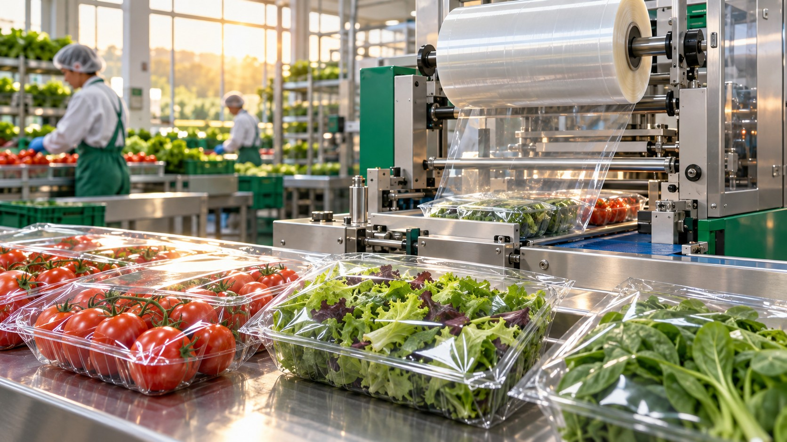

Cultivation films
Explore film requirements for the chosen growing environment, including optical behaviour, condensation and practical service conditions.

Pactive Korea’s processing experience connecting cultivation, antifog and automated packaging.
A Smart Farm story continues after harvesting: through handling, packaging, distribution and the customer’s experience.
Drawing on the specialty-film production and processing experience described by our team, Neipclova seeks to connect Pactive Korea’s technical network with agricultural films, antifog applications and produce packaging development.
The role is to connect production technologies, suitable partners and application knowledge. Specific materials, equipment and supply responsibilities are agreed for each project.
Explore film requirements for the chosen growing environment, including optical behaviour, condensation and practical service conditions.
Antifog surfaces address the visible fog associated with condensed droplets. Performance depends on material formulation and service conditions; transparency alone does not establish longer shelf life.
Match packaging to the crop, handling needs, moisture, gas exchange, sealing and distribution conditions, with appropriate food-contact assessment.
Our development direction links harvesting and sorting with automatic packaging so that fruit and plants can be prepared for delivery with consistent handling.
Neipclova aims to support packaging development for longer useful distribution life and reduced avoidable loss. This requires trials with the actual crop, film and logistics conditions.
Relevant comparisons include package clarity, seal integrity, moisture behaviour, produce quality and validated storage duration. No fixed extension in days is claimed without supporting results.
Read a scientific review of antifog packagingLET’S EXPLORE THIS FIELD
Tell us about your crop, your space and your next step.